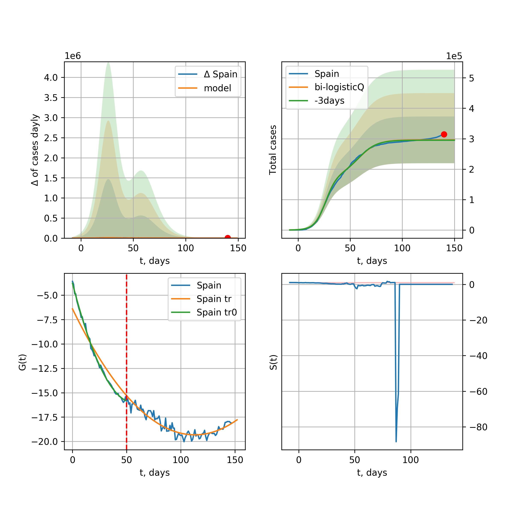
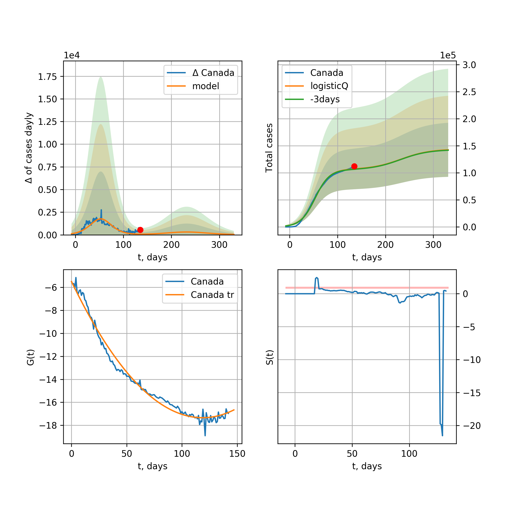
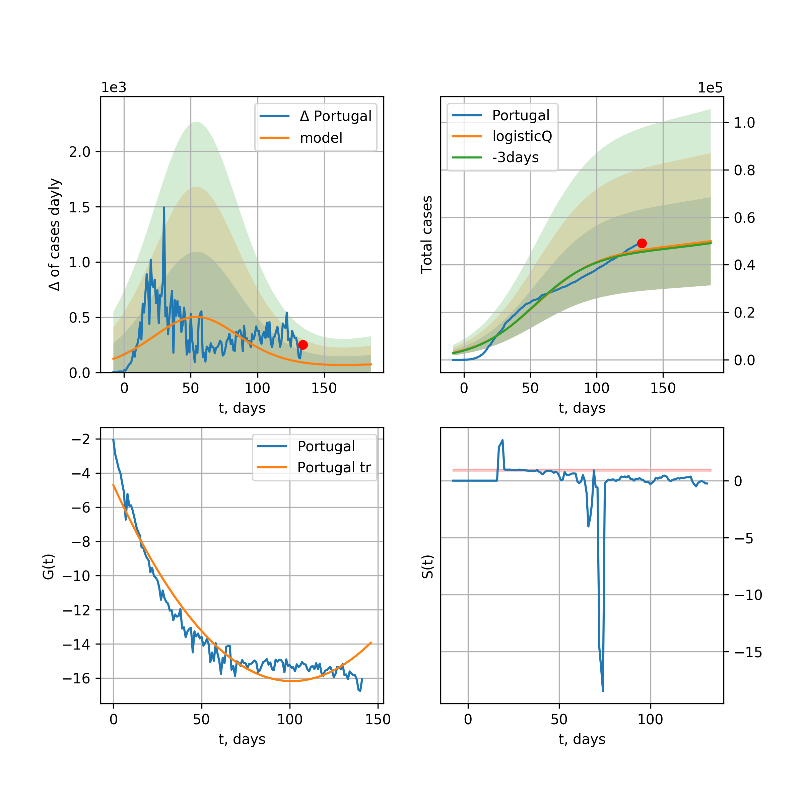
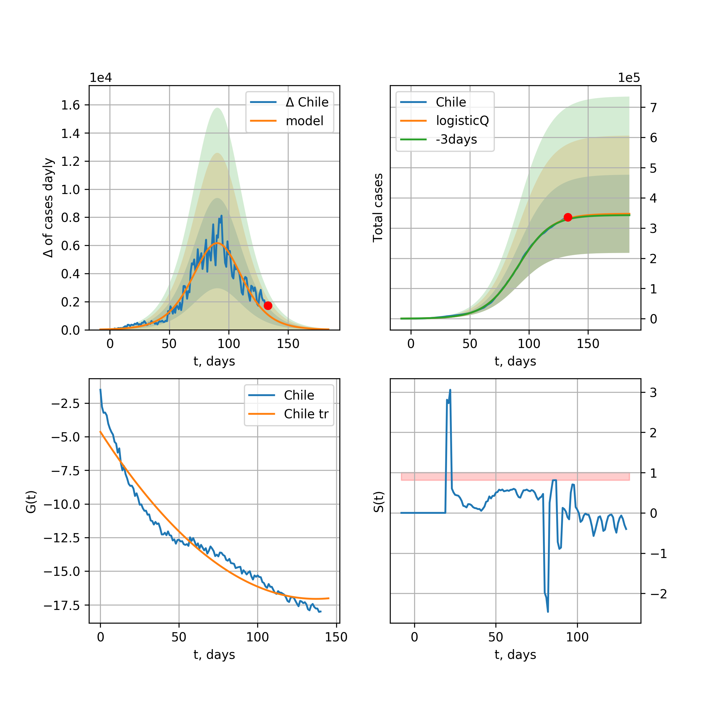
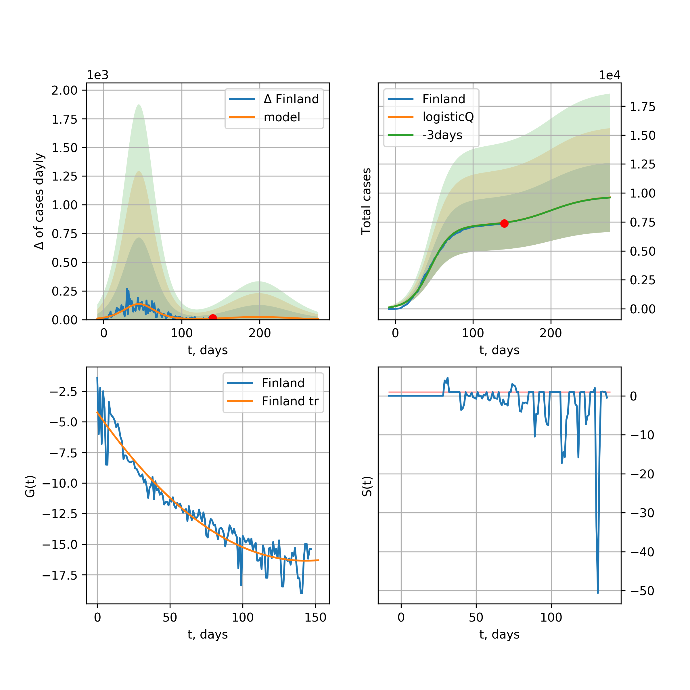
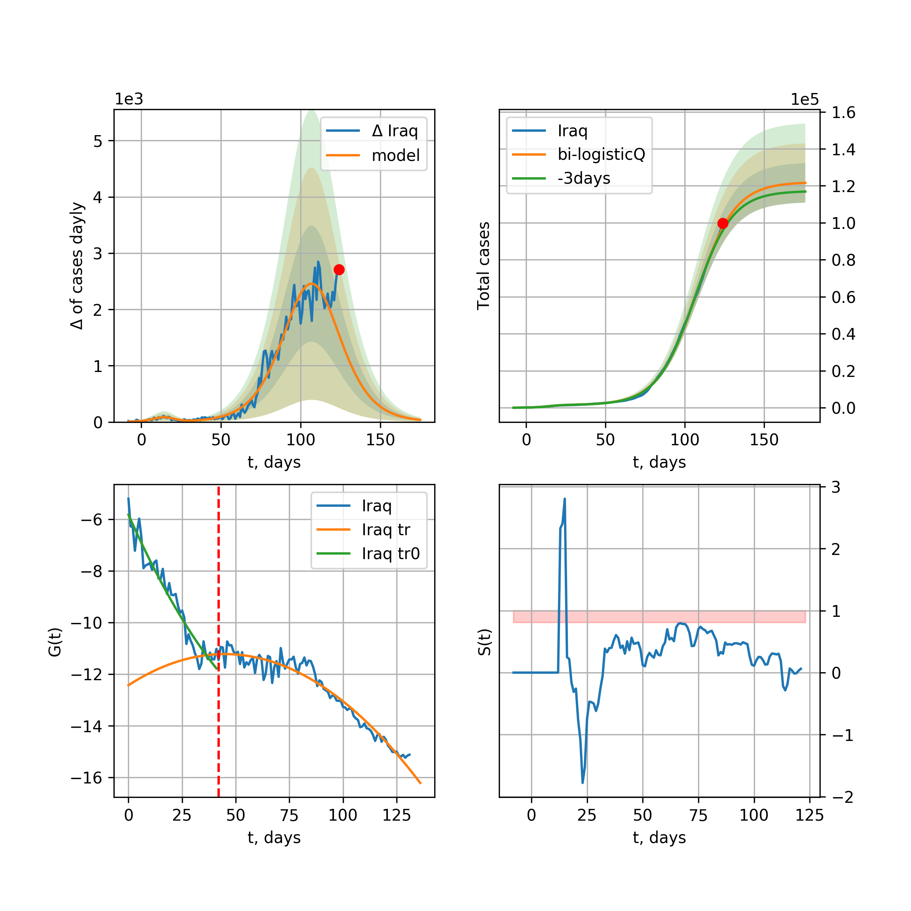
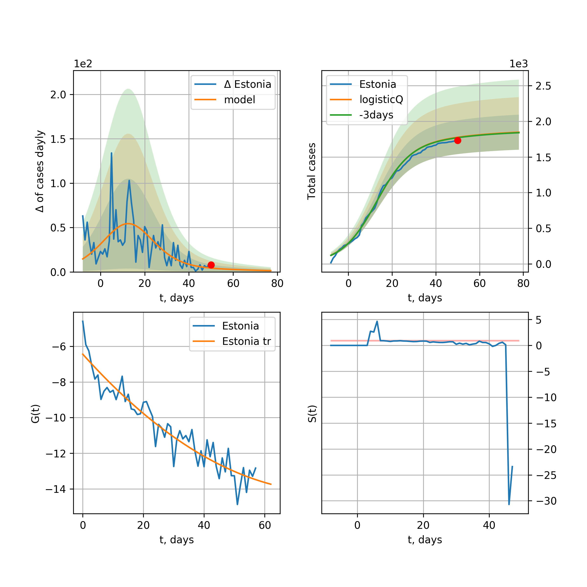
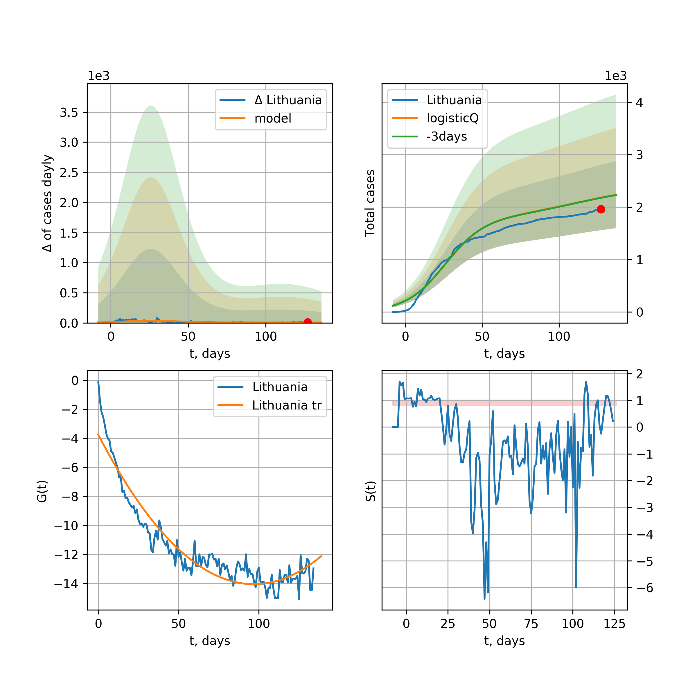

Multi-logistic model of COVID-19 dynamics
Model, code, results
Project maintained by algmaknick Hosted on GitHub Pages — Theme by mattgraham
World

World data at: 2020-05-01
+3 day model MAPE: 0.048398
model: bi-logisticQ
coeffs: [ 3.11650074e+06 5.52925237e-06 7.05863274e+01 -2.34749051e+04]
S.Korea scenario coeffs: [0.35416971, 0.02606324, 4.35859408, 19.30413219]
rational stdev: 0.123549
forecast at the end of period: +316 days
deltaDaycases: 136
total cases: 4626657 ± 571620
total death: 325935 ± 120807
trend coefficient of determination: 0.957216
intercept_: -9.890425229004336
coeffs_: [ 0. -0.26614025 0.00124975]
trend1 coefficient of determination: 0.874764
intercept_: -22.035447570025077
coeffs_: [ 0. 0.31660897 -0.00341999]
trend coefficient of determination: 0.988881
intercept_: -0.593904199773867
coeffs_: [ 0. -0.35113113 0.00168812]
European Union

European Union data at: 2020-05-01
+3 day model MAPE: 0.018586
model: logisticQ
coeffs: [ 1.01349078e+06 1.37273737e-06 4.79853982e+01 -9.44356652e+04]
S.Korea scenario coeffs: [0.35416971, 0.02606324, 4.35859408, 19.30413219]
rational stdev: 0.427064
forecast at the end of period: +211 days
deltaDaycases: 158
total cases: 1370067 ± 585107
total death: 141683 ± 181523
trend coefficient of determination: 0.986144
intercept_: -3.0116513456684775
coeffs_: [ 0. -0.32851184 0.00169106]
USA

USA data at: 2020-05-01
+3 day model MAPE: 0.047588
model: logisticQ
coeffs: [ 1.19413534e+06 1.59392193e-06 3.54539301e+01 -7.83502895e+04]
S.Korea scenario coeffs: [0.35416971, 0.02606324, 4.35859408, 19.30413219]
rational stdev: 0.422988
forecast at the end of period: +134 days
deltaDaycases: 2771
total cases: 1568417 ± 663421
total death: 91178 ± 115701
trend coefficient of determination: 0.996523
intercept_: -5.552758970127716
coeffs_: [ 0. -0.37858484 0.00298127]
Spain

Spain data at: 2020-05-01
+3 day model MAPE: 0.028157
model: logisticQ
coeffs: [ 1.80489569e+05 4.90633148e-06 2.63952659e+01 -3.83458431e+04]
rational stdev: 0.373397
forecast at the end of period: +64 days
deltaDaycases: 0
total cases: 180489 ± 67394
total death: 18439 ± 20655
trend coefficient of determination: 0.997432
intercept_: -3.859009253100683
coeffs_: [ 0. -0.42385579 0.00363487]
Italy

Italy data at: 2020-05-01
+3 day model MAPE: 0.019619
model: logisticQ
coeffs: [ 2.04383665e+05 8.67263057e-07 2.91652029e+01 -1.29590220e+05]
S.Korea scenario coeffs: [0.35416971, 0.02606324, 4.35859408, 19.30413219]
rational stdev: 0.323334
forecast at the end of period: +120 days
deltaDaycases: 191
total cases: 273305 ± 88368
total death: 37203 ± 36086
trend coefficient of determination: 0.994758
intercept_: -7.095655278253213
coeffs_: [ 0. -0.28813308 0.002185 ]
United Kingdom

United Kingdom data at: 2020-05-01
+3 day model MAPE: 0.041820
model: logisticQ
coeffs: [ 1.88832107e+05 2.16025361e-06 4.02892824e+01 -5.91922264e+04]
S.Korea scenario coeffs: [0.35416971, 0.02606324, 4.35859408, 19.30413219]
rational stdev: 0.384875
forecast at the end of period: +162 days
deltaDaycases: 240
total cases: 251849 ± 96930
total death: 39043 ± 45080
trend coefficient of determination: 0.995001
intercept_: -4.184782317199019
coeffs_: [ 0. -0.30927022 0.00200984]
France

France data at: 2020-05-01
+3 day model MAPE: 0.006839
model: logisticQ
coeffs: [ 1.68765163e+05 3.06179827e-06 3.22715834e+01 -4.94325241e+04]
S.Korea scenario coeffs: [0.35416971, 0.02606324, 4.35859408, 19.30413219]
rational stdev: 0.313598
forecast at the end of period: +130 days
deltaDaycases: 121
total cases: 226955 ± 71172
total death: 33354 ± 31379
trend coefficient of determination: 0.981843
intercept_: -5.051453587883749
coeffs_: [ 0. -0.30742037 0.00184749]
Germany

Germany data at: 2020-05-01
+3 day model MAPE: 0.015202
model: logisticQ
coeffs: [ 1.59476650e+05 1.31498321e-06 2.97618158e+01 -1.13590493e+05]
S.Korea scenario coeffs: [0.35416971, 0.02606324, 4.35859408, 19.30413219]
rational stdev: 0.372272
forecast at the end of period: +134 days
deltaDaycases: 37
total cases: 215476 ± 80216
total death: 8846 ± 9879
trend coefficient of determination: 0.993588
intercept_: -4.581306613832961
coeffs_: [ 0. -0.34736665 0.00245152]
Turkey

Turkey data at: 2020-05-01
+3 day model MAPE: 0.022870
model: logisticQ
coeffs: [ 1.27349120e+05 3.18621385e-06 2.67548222e+01 -4.87903929e+04]
S.Korea scenario coeffs: [0.35416971, 0.02606324, 4.35859408, 19.30413219]
rational stdev: 0.397465
forecast at the end of period: +126 days
deltaDaycases: 54
total cases: 171770 ± 68272
total death: 4572 ± 5451
trend coefficient of determination: 0.975727
intercept_: -2.960535569594539
coeffs_: [ 0. -0.49905072 0.00505877]
Russia

Russia data at: 2020-05-01
+3 day model MAPE: 0.049160
model: logisticQ
coeffs: [ 1.60071884e+05 1.38266145e-05 4.87079495e+01 -1.14825206e+04]
S.Korea scenario coeffs: [0.35416971, 0.02606324, 4.35859408, 19.30413219]
rational stdev: 0.341377
forecast at the end of period: +211 days
deltaDaycases: 67
total cases: 215939 ± 73716
total death: 2205 ± 2258
trend coefficient of determination: 0.948540
intercept_: -3.7962087718427213
coeffs_: [ 0.00000000e+00 -1.87155036e-01 9.74847251e-05]
Iran

Iran data at: 2020-05-01
+3 day model MAPE: 0.437963
model: logisticQ
coeffs: [ 7.36885538e+03 7.42900276e-05 -6.37012173e+03 6.90117085e+00]
rational stdev: 0.203007
forecast at the end of period: +78 days
deltaDaycases: 0
total cases: 7368 ± 1495
total death: 469 ± 285
trend coefficient of determination: 0.985826
intercept_: -2.7244557798652984
coeffs_: [ 0. -0.60810956 0.00802289]
Brazil

Brazil data at: 2020-05-01
+3 day model MAPE: 0.121062
model: logisticQ
coeffs: [ 2.44312552e+05 8.07395076e-06 5.75205431e+01 -1.19458483e+04]
S.Korea scenario coeffs: [0.35416971, 0.02606324, 4.35859408, 19.30413219]
rational stdev: 0.413694
forecast at the end of period: +281 days
deltaDaycases: 76
total cases: 329282 ± 136222
total death: 22899 ± 28419
trend coefficient of determination: 0.831837
intercept_: -3.8360884448133774
coeffs_: [ 0. -0.32295348 0.00259044]
Canada

Canada data at: 2020-05-01
+3 day model MAPE: 0.044387
model: logisticQ
coeffs: [ 6.28397997e+04 1.58381095e-06 3.82758055e+01 -7.20038376e+04]
S.Korea scenario coeffs: [0.35416971, 0.02606324, 4.35859408, 19.30413219]
rational stdev: 0.397065
forecast at the end of period: +168 days
deltaDaycases: 53
total cases: 84144 ± 33410
total death: 5182 ± 6172
trend coefficient of determination: 0.985077
intercept_: -4.646792557919564
coeffs_: [ 0. -0.26703397 0.00168712]
Belgium

Belgium data at: 2020-05-01
+3 day model MAPE: 0.015015
model: logisticQ
coeffs: [ 5.11295477e+04 1.76779475e-06 3.14917258e+01 -7.23012390e+04]
S.Korea scenario coeffs: [0.35416971, 0.02606324, 4.35859408, 19.30413219]
rational stdev: 0.347751
forecast at the end of period: +134 days
deltaDaycases: 45
total cases: 68528 ± 23830
total death: 10765 ± 11230
trend coefficient of determination: 0.978808
intercept_: -4.110056536199428
coeffs_: [ 0. -0.34360732 0.00275182]
Peru

Peru data at: 2020-05-01
+3 day model MAPE: 0.150129
model: logisticQ
coeffs: [ 7.58244929e+04 5.92159072e-06 4.65905225e+01 -2.04532361e+04]
S.Korea scenario coeffs: [0.35416971, 0.02606324, 4.35859408, 19.30413219]
rational stdev: 0.341680
forecast at the end of period: +204 days
deltaDaycases: 81
total cases: 101308 ± 34615
total death: 2814 ± 2884
trend coefficient of determination: 0.963526
intercept_: -3.4764925760668186
coeffs_: [ 0. -0.31158594 0.00249141]
Netherlands

Netherlands data at: 2020-05-01
+3 day model MAPE: 0.009699
model: logisticQ
coeffs: [ 4.14901058e+04 1.72708446e-06 3.28821614e+01 -7.01316044e+04]
S.Korea scenario coeffs: [0.35416971, 0.02606324, 4.35859408, 19.30413219]
rational stdev: 0.365979
forecast at the end of period: +134 days
deltaDaycases: 47
total cases: 55377 ± 20266
total death: 6809 ± 7475
trend coefficient of determination: 0.981280
intercept_: -3.1219941407348877
coeffs_: [ 0. -0.37475276 0.00305994]
India

India data at: 2020-05-01
+3 day model MAPE: 0.054637
model: logisticQ
coeffs: [ 5.04915644e+04 4.16598602e-04 1.60751940e+01 -2.98987515e+02]
S.Korea scenario coeffs: [0.35416971, 0.02606324, 4.35859408, 19.30413219]
rational stdev: 0.113591
forecast at the end of period: +78 days
deltaDaycases: 125
total cases: 66190 ± 7518
total death: 2168 ± 738
trend coefficient of determination: 0.972973
intercept_: -9.267302135902948
coeffs_: [ 0. -0.23741849 0.00338852]
Switzerland

Switzerland data at: 2020-05-01
+3 day model MAPE: 0.009162
model: logisticQ
coeffs: [ 2.89036380e+04 1.23331932e-06 2.51500499e+01 -1.27205429e+05]
S.Korea scenario coeffs: [0.35416971, 0.02606324, 4.35859408, 19.30413219]
rational stdev: 0.361987
forecast at the end of period: +106 days
deltaDaycases: 11
total cases: 39002 ± 14118
total death: 2302 ± 2499
trend coefficient of determination: 0.987150
intercept_: -3.3578702088942904
coeffs_: [ 0. -0.36682256 0.00276614]
Ecuador

Ecuador data at: 2020-05-01
+3 day model MAPE: 0.021898
model: logisticQ
coeffs: [ 2.70848535e+04 3.54529281e-06 2.49712865e+01 -3.74805922e+04]
S.Korea scenario coeffs: [0.35416971, 0.02606324, 4.35859408, 19.30413219]
rational stdev: 0.339077
forecast at the end of period: +134 days
deltaDaycases: 6
total cases: 36584 ± 12404
total death: 1476 ± 1501
trend coefficient of determination: 0.646703
intercept_: -6.651868524591974
coeffs_: [ 0. -0.21770193 0.00076957]
Portugal

Portugal data at: 2020-05-01
+3 day model MAPE: 0.023576
model: logisticQ
coeffs: [ 2.52250680e+04 1.37647204e-06 2.83438081e+01 -1.00549147e+05]
S.Korea scenario coeffs: [0.35416971, 0.02606324, 4.35859408, 19.30413219]
rational stdev: 0.392666
forecast at the end of period: +134 days
deltaDaycases: 8
total cases: 34045 ± 13368
total death: 1352 ± 1592
trend coefficient of determination: 0.988768
intercept_: -2.6290482802486395
coeffs_: [ 0. -0.39428307 0.00333096]
Saudi Arabia

Saudi Arabia data at: 2020-05-01
+3 day model MAPE: 0.018335
model: logisticQ
coeffs: [ 3.64651648e+04 8.29229278e-04 4.65564400e+01 -1.29994391e+02]
S.Korea scenario coeffs: [0.35416971, 0.02606324, 4.35859408, 19.30413219]
rational stdev: 0.397939
forecast at the end of period: +218 days
deltaDaycases: 14
total cases: 49140 ± 19554
total death: 344 ± 410
trend coefficient of determination: 0.779217
intercept_: -4.122979369841758
coeffs_: [ 0. -0.25847032 0.00199846]
Sweden

Sweden data at: 2020-05-01
+3 day model MAPE: 0.034422
model: logisticQ
coeffs: [ 2.60598140e+04 2.14386735e-06 4.23851383e+01 -4.48815371e+04]
S.Korea scenario coeffs: [0.35416971, 0.02606324, 4.35859408, 19.30413219]
rational stdev: 0.338666
forecast at the end of period: +190 days
deltaDaycases: 20
total cases: 34857 ± 11805
total death: 4297 ± 4365
trend coefficient of determination: 0.967779
intercept_: -3.8175692748912944
coeffs_: [ 0. -0.3084901 0.00255544]
Ireland

Ireland data at: 2020-05-01
+3 day model MAPE: 0.003127
model: logisticQ
coeffs: [ 2.26651459e+04 1.94393473e-04 3.40707174e+01 -6.84128321e+02]
S.Korea scenario coeffs: [0.35416971, 0.02606324, 4.35859408, 19.30413219]
rational stdev: 0.355400
forecast at the end of period: +148 days
deltaDaycases: 17
total cases: 30440 ± 10818
total death: 1848 ± 1970
trend coefficient of determination: 0.978361
intercept_: -3.527042458221759
coeffs_: [ 0. -0.30682614 0.00222515]
Mexico

Mexico data at: 2020-05-01
+3 day model MAPE: 0.027443
model: logisticQ
coeffs: [ 4.45578350e+04 1.43564048e-05 3.75374878e+01 -7.56075908e+03]
S.Korea scenario coeffs: [0.35416971, 0.02606324, 4.35859408, 19.30413219]
rational stdev: 0.215496
forecast at the end of period: +176 days
deltaDaycases: 54
total cases: 59294 ± 12777
total death: 5638 ± 3644
trend coefficient of determination: 0.987907
intercept_: -6.507624509271491
coeffs_: [ 0. -0.23251836 0.00215763]
Singapore

Singapore data at: 2020-05-01
+3 day model MAPE: 0.020035
model: bi-logisticQ
coeffs: [ 1.91913103e+04 1.62477944e-03 8.19085849e+01 -4.25720805e+01]
S.Korea scenario coeffs: [0.35, 0.5, 4.0, 1.0]
rational stdev: 0.455178
forecast at the end of period: +106 days
deltaDaycases: 0
total cases: 19290 ± 8780
total death: 18 ± 24
trend coefficient of determination: 0.914568
intercept_: -2.036640634366525
coeffs_: [ 0. -0.39517788 0.00592335]
trend coefficient of determination: 0.862920
intercept_: -10.17759337146799
coeffs_: [ 0. 0.10093689 -0.00130997]
Chile

Chile data at: 2020-05-01
+3 day model MAPE: 0.097652
model: logisticQ
coeffs: [ 1.97384329e+04 1.40090189e-06 3.80651697e+01 -7.42822380e+04]
S.Korea scenario coeffs: [0.35416971, 0.02606324, 4.35859408, 19.30413219]
rational stdev: 0.411703
forecast at the end of period: +162 days
deltaDaycases: 27
total cases: 26181 ± 10779
total death: 360 ± 444
trend coefficient of determination: 0.739955
intercept_: -4.242579736495545
coeffs_: [ 0. -0.28165801 0.0023007 ]
Israel

Israel data at: 2020-05-01
+3 day model MAPE: 0.019518
model: logisticQ
coeffs: [ 1.58258759e+04 1.25138632e-06 3.50884986e+01 -1.17701213e+05]
S.Korea scenario coeffs: [0.35416971, 0.02606324, 4.35859408, 19.30413219]
rational stdev: 0.406572
forecast at the end of period: +134 days
deltaDaycases: 17
total cases: 21193 ± 8616
total death: 296 ± 361
trend coefficient of determination: 0.927187
intercept_: -2.9954776721803684
coeffs_: [ 0. -0.23601825 0.00088582]
Austria

Austria data at: 2020-05-01
+3 day model MAPE: 0.008246
model: logisticQ
coeffs: [ 1.49271529e+04 1.62868827e-06 2.30559180e+01 -1.27683350e+05]
S.Korea scenario coeffs: [0.35416971, 0.02606324, 4.35859408, 19.30413219]
rational stdev: 0.315626
forecast at the end of period: +92 days
deltaDaycases: 3
total cases: 20181 ± 6369
total death: 765 ± 724
trend coefficient of determination: 0.978814
intercept_: -2.752379559676063
coeffs_: [ 0. -0.35804086 0.00248257]
Belarus

Belarus data at: 2020-05-01
+3 day model MAPE: 0.080316
model: logisticQ
coeffs: [ 2.29811112e+04 7.40082700e-06 1.90374670e+01 -1.94229543e+04]
S.Korea scenario coeffs: [0.35416971, 0.02606324, 4.35859408, 19.30413219]
rational stdev: 0.233241
forecast at the end of period: +106 days
deltaDaycases: 20
total cases: 30838 ± 7192
total death: 192 ± 134
trend coefficient of determination: 0.971876
intercept_: -6.951496653778041
coeffs_: [ 0. -0.29132645 0.00375298]
Japan

Japan data at: 2020-05-01
+3 day model MAPE: 0.009112
model: logisticQ
coeffs: [ 1.46267003e+04 1.67506808e-03 1.96747284e+01 -7.29209208e+01]
S.Korea scenario coeffs: [0.35416971, 0.02606324, 4.35859408, 19.30413219]
rational stdev: 0.059544
forecast at the end of period: +106 days
deltaDaycases: 7
total cases: 19708 ± 1173
total death: 626 ± 111
trend coefficient of determination: 0.931657
intercept_: -10.076813297133606
coeffs_: [ 0. 0.01949293 -0.00259254]
Qatar

Qatar data at: 2020-05-01
+3 day model MAPE: 10.389766
model: logisticQ
coeffs: [ 4.40923501e+02 -1.12413074e-01 1.14811089e+01 1.00067900e-01]
rational stdev: 28560.888310
forecast at the end of period: +92 days
deltaDaycases: 0
total cases: 0 ± 0
total death: 0 ± 0
trend coefficient of determination: 0.925886
intercept_: -2.1066548119132458
coeffs_: [ 0. -0.53152809 -0.00944941]
Poland

Poland data at: 2020-05-01
+3 day model MAPE: 0.037079
model: logisticQ
coeffs: [ 1.42253600e+04 2.11565969e-06 3.24639789e+01 -5.69488902e+04]
S.Korea scenario coeffs: [0.35416971, 0.02606324, 4.35859408, 19.30413219]
rational stdev: 0.360558
forecast at the end of period: +148 days
deltaDaycases: 9
total cases: 19104 ± 6888
total death: 949 ± 1026
trend coefficient of determination: 0.983240
intercept_: -2.9618002756254684
coeffs_: [ 0. -0.34709555 0.00299614]
UAE

UAE data at: 2020-05-01
+3 day model MAPE: 0.059435
model: logisticQ
coeffs: [ 1.64495933e+04 3.88823958e-06 1.84583464e+01 -3.22658789e+04]
S.Korea scenario coeffs: [0.35416971, 0.02606324, 4.35859408, 19.30413219]
rational stdev: 0.150795
forecast at the end of period: +92 days
deltaDaycases: 26
total cases: 21832 ± 3292
total death: 185 ± 83
trend coefficient of determination: 0.972728
intercept_: -7.754460755320794
coeffs_: [ 0. -0.21846832 0.00225604]
Romania

Romania data at: 2020-05-01
+3 day model MAPE: 0.038659
model: logisticQ
coeffs: [ 1.35030599e+04 1.97121832e-06 3.15060655e+01 -6.19495145e+04]
S.Korea scenario coeffs: [0.35416971, 0.02606324, 4.35859408, 19.30413219]
rational stdev: 0.337555
forecast at the end of period: +134 days
deltaDaycases: 16
total cases: 18013 ± 6080
total death: 1066 ± 1079
trend coefficient of determination: 0.985269
intercept_: -3.7643217680660177
coeffs_: [ 0. -0.30981571 0.00258267]
Ukraine

Ukraine data at: 2020-05-01
+3 day model MAPE: 0.034489
model: logisticQ
coeffs: [ 1.64548321e+04 6.66857815e-06 3.28541766e+01 -1.89389729e+04]
S.Korea scenario coeffs: [0.35416971, 0.02606324, 4.35859408, 19.30413219]
rational stdev: 0.338090
forecast at the end of period: +148 days
deltaDaycases: 20
total cases: 21943 ± 7418
total death: 549 ± 556
trend coefficient of determination: 0.938363
intercept_: -3.6340534471368686
coeffs_: [ 0. -0.36322464 0.003963 ]
South_Korea

South Korea data at: 2020-05-01
+3 day model MAPE: 0.001307
model: bi-logisticQ
coeffs: [ 2.81229102e+03 1.94091213e-06 3.20706657e+01 -9.27577379e+04]
rational stdev: 0.136308
forecast at the end of period: +22 days
deltaDaycases: 0
total cases: 10712 ± 1460
total death: 248 ± 101
trend coefficient of determination: 0.925965
intercept_: -5.745633553515705
coeffs_: [ 0. -0.22458651 -0.00428776]
trend coefficient of determination: 0.504844
intercept_: -11.19357033976762
coeffs_: [ 0. -0.06571011 -0.00015571]
Indonesia

Indonesia data at: 2020-05-01
+3 day model MAPE: 0.017889
model: logisticQ
coeffs: [ 1.33127409e+04 4.53644215e-05 2.04462438e+01 -2.34401643e+03]
S.Korea scenario coeffs: [0.35416971, 0.02606324, 4.35859408, 19.30413219]
rational stdev: 0.044008
forecast at the end of period: +120 days
deltaDaycases: 8
total cases: 17871 ± 786
total death: 1355 ± 178
trend coefficient of determination: 0.969308
intercept_: -8.532444309670424
coeffs_: [ 0. -0.14581114 0.00098463]
Denmark

Denmark data at: 2020-05-01
+3 day model MAPE: 2.879608
model: logisticQ
coeffs: [ 8.62480490e+02 2.49401516e-04 4.73670538e+00 -4.50088701e+03]
rational stdev: 487.269302
forecast at the end of period: +22 days
deltaDaycases: 0
total cases: 862 ± 420260
total death: 42 ± 61395
trend coefficient of determination: 0.965266
intercept_: -2.0557034713075613
coeffs_: [ 0. -0.1970759 -0.01925246]
Serbia

Serbia data at: 2020-05-01
+3 day model MAPE: 0.029366
model: logisticQ
coeffs: [ 9.76620655e+03 4.27245232e-06 2.80953349e+01 -3.47913659e+04]
S.Korea scenario coeffs: [0.35416971, 0.02606324, 4.35859408, 19.30413219]
rational stdev: 0.268849
forecast at the end of period: +106 days
deltaDaycases: 26
total cases: 12834 ± 3450
total death: 257 ± 207
trend coefficient of determination: 0.963613
intercept_: -3.8699002454284503
coeffs_: [ 0. -0.28988003 0.00224464]
Philippines

Philippines data at: 2020-05-01
+3 day model MAPE: 0.061028
model: logisticQ
coeffs: [ 8.61205785e+03 1.77442956e-06 2.23429435e+01 -7.38453176e+04]
S.Korea scenario coeffs: [0.35416971, 0.02606324, 4.35859408, 19.30413219]
rational stdev: 0.345795
forecast at the end of period: +78 days
deltaDaycases: 29
total cases: 11131 ± 3849
total death: 734 ± 761
trend coefficient of determination: 0.943032
intercept_: -4.351483070971691
coeffs_: [ 0. -0.35332977 0.00379712]
Norway

Norway data at: 2020-05-01
+3 day model MAPE: 0.010261
model: logisticQ
coeffs: [ 7.60426611e+03 1.15725511e-06 2.33387850e+01 -1.15123271e+05]
S.Korea scenario coeffs: [0.35416971, 0.02606324, 4.35859408, 19.30413219]
rational stdev: 0.335592
forecast at the end of period: +106 days
deltaDaycases: 2
total cases: 10253 ± 3441
total death: 276 ± 277
trend coefficient of determination: 0.969910
intercept_: -3.104680915327407
coeffs_: [ 0. -0.36510848 0.00312115]
Czechia

Czechia data at: 2020-05-01
+3 day model MAPE: 0.016549
model: logisticQ
coeffs: [ 7.48378707e+03 1.40676455e-06 2.40758501e+01 -1.07980473e+05]
S.Korea scenario coeffs: [0.35416971, 0.02606324, 4.35859408, 19.30413219]
rational stdev: 0.342781
forecast at the end of period: +106 days
deltaDaycases: 3
total cases: 10092 ± 3459
total death: 313 ± 321
trend coefficient of determination: 0.901637
intercept_: -3.8690597710713828
coeffs_: [ 0. -0.29527012 0.00215857]
Colombia

Colombia data at: 2020-05-01
+3 day model MAPE: 0.097743
model: logisticQ
coeffs: [ 9.43243241e+03 2.05274216e-06 3.55424667e+01 -4.75448830e+04]
S.Korea scenario coeffs: [0.35416971, 0.02606324, 4.35859408, 19.30413219]
rational stdev: 0.336414
forecast at the end of period: +162 days
deltaDaycases: 11
total cases: 12521 ± 4212
total death: 561 ± 566
trend coefficient of determination: 0.963241
intercept_: -3.2201631662107246
coeffs_: [ 0. -0.38103472 0.00433926]
Australia

Australia data at: 2020-05-01
+3 day model MAPE: 0.003998
model: logisticQ
coeffs: [ 6.62446167e+03 3.07140509e-06 1.80560288e+01 -7.55015126e+04]
S.Korea scenario coeffs: [0.35416971, 0.02606324, 4.35859408, 19.30413219]
rational stdev: 0.207090
forecast at the end of period: +50 days
deltaDaycases: 15
total cases: 8840 ± 1830
total death: 121 ± 75
trend coefficient of determination: 0.977188
intercept_: -4.8710697155955485
coeffs_: [ 0. -0.25032559 0.00112281]
Malaysia

Malaysia data at: 2020-05-01
+3 day model MAPE: 0.011047
model: logisticQ
coeffs: [ 5.99700815e+03 2.52240802e-06 2.72099234e+01 -5.37253645e+04]
S.Korea scenario coeffs: [0.35416971, 0.02606324, 4.35859408, 19.30413219]
rational stdev: 0.332567
forecast at the end of period: +106 days
deltaDaycases: 6
total cases: 8016 ± 2665
total death: 136 ± 135
trend coefficient of determination: 0.834354
intercept_: -4.403382592891479
coeffs_: [ 0. -0.25013453 0.00166705]
Egypt

Egypt data at: 2020-05-01
+3 day model MAPE: 0.064483
model: logisticQ
coeffs: [ 8.75764591e+03 2.31329766e-05 2.97975097e+01 -4.18443464e+03]
S.Korea scenario coeffs: [0.35416971, 0.02606324, 4.35859408, 19.30413219]
rational stdev: 0.093391
forecast at the end of period: +148 days
deltaDaycases: 9
total cases: 11653 ± 1088
total death: 802 ± 224
trend coefficient of determination: 0.923336
intercept_: -7.553913714650536
coeffs_: [ 0. -0.1323093 0.0007971]
Finland

Finland data at: 2020-05-01
+3 day model MAPE: 0.026368
model: logisticQ
coeffs: [ 5.49639481e+03 1.62667782e-06 3.76879537e+01 -6.45635727e+04]
S.Korea scenario coeffs: [0.35416971, 0.02606324, 4.35859408, 19.30413219]
rational stdev: 0.383424
forecast at the end of period: +176 days
deltaDaycases: 2
total cases: 7395 ± 2835
total death: 319 ± 366
trend coefficient of determination: 0.876172
intercept_: -3.3133296316179575
coeffs_: [ 0. -0.2449607 0.00158464]
Morocco

Morocco data at: 2020-05-01
+3 day model MAPE: 0.015356
model: logisticQ
coeffs: [ 5.51191830e+03 1.19298239e-05 2.63265628e+01 -1.04788171e+04]
S.Korea scenario coeffs: [0.35416971, 0.02606324, 4.35859408, 19.30413219]
rational stdev: 0.240815
forecast at the end of period: +134 days
deltaDaycases: 3
total cases: 7415 ± 1785
total death: 277 ± 200
trend coefficient of determination: 0.962978
intercept_: -4.925186138238542
coeffs_: [ 0. -0.25270241 0.00215159]
Argentina

Argentina data at: 2020-05-01
+3 day model MAPE: 0.061338
model: logisticQ
coeffs: [ 5.16728513e+03 2.20690856e-06 3.40677433e+01 -4.63426916e+04]
S.Korea scenario coeffs: [0.35416971, 0.02606324, 4.35859408, 19.30413219]
rational stdev: 0.378812
forecast at the end of period: +148 days
deltaDaycases: 6
total cases: 6864 ± 2600
total death: 340 ± 386
trend coefficient of determination: 0.666722
intercept_: -2.7271765274028876
coeffs_: [ 0. -0.39327013 0.00433302]
Algeria

Algeria data at: 2020-05-01
+3 day model MAPE: 0.082929
model: logisticQ
coeffs: [ 4.74574101e+03 1.88263622e-06 2.33116372e+01 -5.46903083e+04]
S.Korea scenario coeffs: [0.35416971, 0.02606324, 4.35859408, 19.30413219]
rational stdev: 0.245159
forecast at the end of period: +134 days
deltaDaycases: 2
total cases: 6383 ± 1565
total death: 696 ± 511
trend coefficient of determination: 0.925201
intercept_: -6.20895164534797
coeffs_: [ 0. -0.22567621 0.00234981]
Luxembourg

Luxembourg data at: 2020-05-01
+3 day model MAPE: 0.010497
model: logisticQ
coeffs: [ 3.65371386e+03 1.43234681e-06 -1.28474625e+05 9.11386110e+00]
rational stdev: 0.267041
forecast at the end of period: +78 days
deltaDaycases: 0
total cases: 3653 ± 975
total death: 88 ± 70
trend coefficient of determination: 0.944838
intercept_: -4.793575419867656
coeffs_: [ 0. -0.39420389 0.00441783]
Thailand

Thailand data at: 2020-04-30
+3 day model MAPE: 0.007440
model: logisticQ
coeffs: [ 2.84878775e+03 1.81899343e-06 4.21849062e+00 -1.07790955e+05]
S.Korea scenario coeffs: [0.35416971, 0.02606324, 4.35859408, 19.30413219]
rational stdev: 0.170117
forecast at the end of period: +79 days
deltaDaycases: 0
total cases: 3857 ± 656
total death: 70 ± 35
trend coefficient of determination: 0.925012
intercept_: -6.411951568091799
coeffs_: [ 0. -0.32724854 0.00372851]
Hungary

Hungary data at: 2020-05-01
+3 day model MAPE: 0.024245
model: logisticQ
coeffs: [ 3.40525532e+03 3.01610874e-06 3.33260876e+01 -3.81624076e+04]
S.Korea scenario coeffs: [0.35416971, 0.02606324, 4.35859408, 19.30413219]
rational stdev: 0.304705
forecast at the end of period: +148 days
deltaDaycases: 3
total cases: 4550 ± 1386
total death: 518 ± 473
trend coefficient of determination: 0.975759
intercept_: -3.227442033227767
coeffs_: [ 0. -0.26519647 0.00208085]
Greece

Greece data at: 2020-05-01
+3 day model MAPE: 0.013336
model: logisticQ
coeffs: [ 2.55620099e+03 1.57827843e-06 2.28264147e+01 -8.28652042e+04]
S.Korea scenario coeffs: [0.35416971, 0.02606324, 4.35859408, 19.30413219]
rational stdev: 0.281658
forecast at the end of period: +106 days
deltaDaycases: 1
total cases: 3444 ± 970
total death: 184 ± 155
trend coefficient of determination: 0.934315
intercept_: -3.2048083274574974
coeffs_: [ 0. -0.31800848 0.00262589]
Iraq

Iraq data at: 2020-05-01
+3 day model MAPE: 1.325310
model: logisticQ
coeffs: [ 3.12023575e+03 1.31776194e-04 2.10594687e+01 -1.03469115e+03]
rational stdev: 0.080850
forecast at the end of period: +64 days
deltaDaycases: 0
total cases: 3119 ± 252
total death: 136 ± 32
trend coefficient of determination: 0.824005
intercept_: -6.262912434952875
coeffs_: [ 0. -0.16770647 0.00178172]
Croatia

Croatia data at: 2020-05-01
+3 day model MAPE: 0.009727
model: logisticQ
coeffs: [ 2.06699788e+03 1.49437043e-06 2.61390577e+01 -1.00661958e+05]
S.Korea scenario coeffs: [0.35416971, 0.02606324, 4.35859408, 19.30413219]
rational stdev: 0.328545
forecast at the end of period: +120 days
deltaDaycases: 0
total cases: 2791 ± 917
total death: 100 ± 98
trend coefficient of determination: 0.980829
intercept_: -2.285062898061895
coeffs_: [ 0. -0.27331327 0.00160496]
Iceland

Iceland data at: 2020-05-01
+3 day model MAPE: 0.000012
model: logisticQ
coeffs: [ 1.80204765e+03 9.79205194e-06 1.33202402e+01 -1.80923115e+04]
rational stdev: 0.069619
forecast at the end of period: +50 days
deltaDaycases: 0
total cases: 1802 ± 125
total death: 10 ± 2
trend coefficient of determination: 0.949166
intercept_: -5.847287633106838
coeffs_: [ 0. -0.16265467 -0.00029204]
Estonia

Estonia data at: 2020-05-01
+3 day model MAPE: 0.007559
model: logisticQ
coeffs: [ 1.69746195e+03 2.89525228e-06 1.26281808e+01 -4.42535598e+04]
S.Korea scenario coeffs: [0.0875, 0.5, 4.0, 1]
rational stdev: 0.141939
forecast at the end of period: +36 days
deltaDaycases: 1
total cases: 1823 ± 258
total death: 55 ± 23
trend coefficient of determination: 0.883441
intercept_: -6.3484872075335215
coeffs_: [ 0. -0.20574708 0.00158183]
Bulgaria

Bulgaria data at: 2020-05-01
+3 day model MAPE: 0.014767
model: logisticQ
coeffs: [ 2.92634947e+03 3.45303682e-06 3.69567234e+01 -2.03730728e+04]
S.Korea scenario coeffs: [0.35416971, 0.02606324, 4.35859408, 19.30413219]
rational stdev: 0.190056
forecast at the end of period: +211 days
deltaDaycases: 1
total cases: 3920 ± 745
total death: 171 ± 97
trend coefficient of determination: 0.889952
intercept_: -5.830798131906305
coeffs_: [ 0. -0.21512215 0.00240479]
New Zealand

New Zealand data at: 2020-05-01
+3 day model MAPE: 0.003643
model: logisticQ
coeffs: [ 1.45725256e+03 4.23510799e-06 2.47931374e+01 -5.96441588e+04]
S.Korea scenario coeffs: [0.35416971, 0.02606324, 4.35859408, 19.30413219]
rational stdev: 0.437703
forecast at the end of period: +78 days
deltaDaycases: 2
total cases: 1952 ± 854
total death: 26 ± 34
trend coefficient of determination: 0.832451
intercept_: -4.1908555918418315
coeffs_: [ 0. -0.10988901 -0.00100988]
Slovenia

Slovenia data at: 2020-05-01
+3 day model MAPE: inf
model: logisticQ
coeffs: [ 2.17965799e+02 4.01733228e-02 -2.21208435e+01 -7.00287194e-01]
S.Korea scenario coeffs: [0.35416971, 0.02606324, 4.35859408, 19.30413219]
rational stdev: 0.266979
forecast at the end of period: +92 days
deltaDaycases: 0
total cases: 295 ± 78
total death: 18 ± 14
trend coefficient of determination: 0.956027
intercept_: -2.543480478113449
coeffs_: [ 0. -0.43771568 -0.00932819]
Slovakia

Slovakia data at: 2020-05-01
+3 day model MAPE: 0.029678
model: logisticQ
coeffs: [ 1.59749207e+03 2.59120634e-05 2.50047723e+01 -4.66459266e+03]
S.Korea scenario coeffs: [0.35416971, 0.02606324, 4.35859408, 19.30413219]
rational stdev: 0.283319
forecast at the end of period: +134 days
deltaDaycases: 0
total cases: 2154 ± 610
total death: 35 ± 29
trend coefficient of determination: 0.900803
intercept_: -3.233732518543274
coeffs_: [ 0. -0.29131816 0.00227999]
Lithuania

Lithuania data at: 2020-05-01
+3 day model MAPE: 0.019924
model: logisticQ
coeffs: [ 1.37716912e+03 9.74833489e-07 1.81118828e+01 -1.47020481e+05]
S.Korea scenario coeffs: [0.35416971, 0.02606324, 4.35859408, 19.30413219]
rational stdev: 0.362844
forecast at the end of period: +78 days
deltaDaycases: 1
total cases: 1845 ± 669
total death: 59 ± 64
trend coefficient of determination: 0.972390
intercept_: -1.354285813614327
coeffs_: [ 0. -0.44313738 0.00473604]
Latvia

Latvia data at: 2020-05-01
+3 day model MAPE: 0.027954
model: logisticQ
coeffs: [ 8.17623506e+02 8.83020037e-07 1.73570378e+01 -1.58123287e+05]
S.Korea scenario coeffs: [0.35416971, 0.02606324, 4.35859408, 19.30413219]
rational stdev: 0.294327
forecast at the end of period: +64 days
deltaDaycases: 1
total cases: 1084 ± 319
total death: 19 ± 16
trend coefficient of determination: 0.735897
intercept_: -3.428003990089236
coeffs_: [ 0. -0.30493318 0.00304435]
Cyprus

Cyprus data at: 2020-05-01
+3 day model MAPE: 0.007700
model: logisticQ
coeffs: [ 8.50185082e+02 5.13586404e-06 1.56594497e+01 -3.07245825e+04]
S.Korea scenario coeffs: [0.35416971, 0.02606324, 4.35859408, 19.30413219]
rational stdev: 0.183313
forecast at the end of period: +92 days
deltaDaycases: 0
total cases: 1149 ± 210
total death: 20 ± 10
trend coefficient of determination: 0.812517
intercept_: -4.342890910147938
coeffs_: [ 0. -0.24548216 0.00193263]
Malta

Malta data at: 2020-05-01
+3 day model MAPE: 0.009080
model: Richards
coeffs: [4.65676906e+02 1.02607225e-01 2.36298328e+01 1.78732275e+00]
rational stdev: 0.263051
forecast at the end of period: +22 days
deltaDaycases: 0
total cases: 465 ± 122
total death: 3 ± 2
trend coefficient of determination: 0.890037
intercept: -6.409444
slope: -0.221447